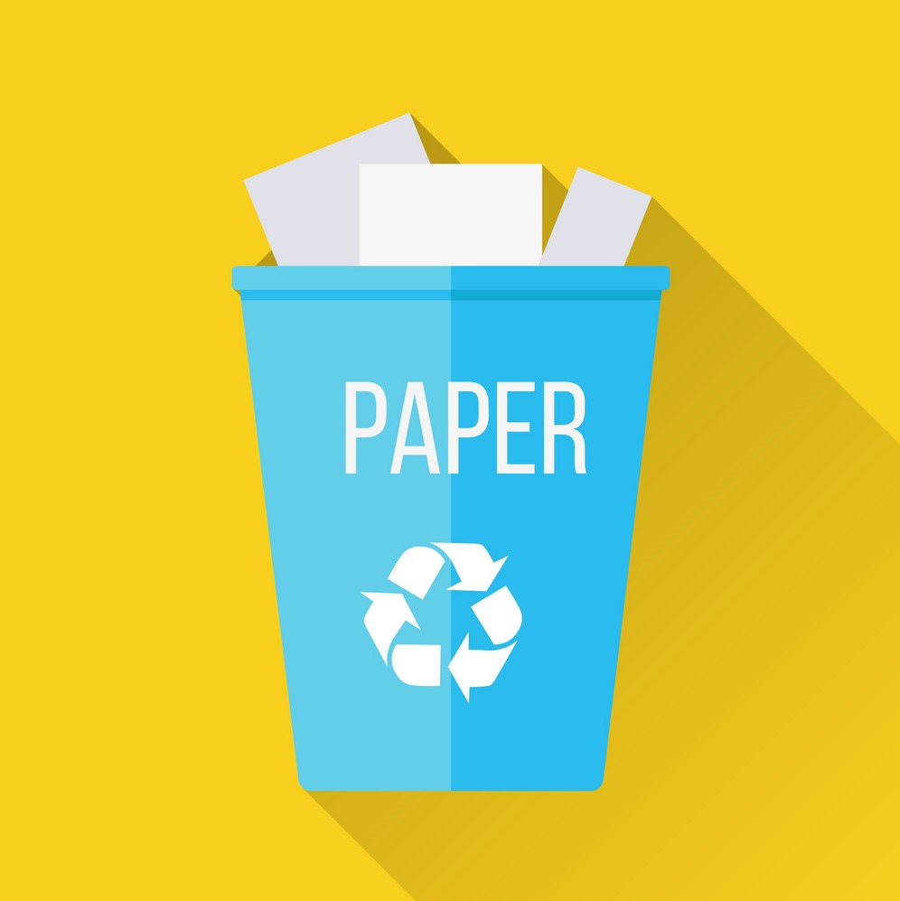

Paper
Recycling Paper
Problems:
42% of all global wood harvest is used to make paper. The biggest issue associated with using paper products is deforestation. Paper products are seldom recycled, despite the ease of doing so. The paper industry is the third largest contributer to global warming pollution and the largest industrial user of water. When paper is not recycled it goes to a landfull the largest source of methane emmissions to the atmosphere, and paper decomposing in the landfill is the biggest source of landfill methane.
On one hand, it can degrade relatively quickly. Paper tissues and towels are found to take around two years to decompose, and things like newspapers take even less time. On the other hand, paper production and disposal can be significantly worse than plastics. This is for multiple reasons. Compared to plastic bags, paper production emits 70-80 percent more air pollution, uses three times more water while producing 50 times more water pollutants and 80 times more solid waste, and consumes four times as much energy. Additionally, recycling paper can require more fuel than it would take to make a new bag. Recycling a pound of paper compared to a pound of plastic takes about 91 percent more energy. As for paper that isn't recycled, paper in landfills does not degrade significantly faster than plastics.
Alternatives:
There are a huge amount of alternatives to using paper products. Instead of using paper towels, use resuable washcloths. Instead of using paper plates, take the extra time to use non-disposable plates.
Take Action:
Paper is one of the most easily recycled materials, so take the extra few seconds it takes to recycle as opposed to just throwing it out. If there is not one already, put aside a bin for paper recyclables.

Return Home to Learn More